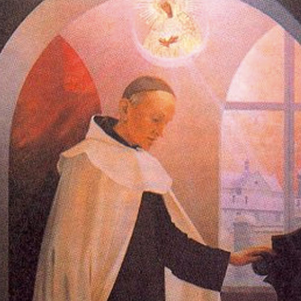

Nació en Vilna el año de 1835. Fue militar condenado diez años a trabajos forzados en Siberia. En 1877 ingresó al Carmelo Teresiano. Restauró la Orden en Polonia. Murio en Wadowice en 1907«El mundo me puede privar de todo pero siempre me quedará un lugar escondido que le será inaccesible: ¡La Oración! En ella, podemos recibir el pasado, el presente y el porvenir y ponerlos en el signo y plano de la esperanza. Oh Di´øs, qué gran tesoro das a aquellos que esperan en ti»INSTRUCCIONES: Mueve las piezas con el ratón. Para rotar una pieza dale dobleclick. Para girarla da dobleclick. Si la pieza aparece muy obscura es que tendrás que "espejearla": Para vertical usa Shift (Teclas Altas y doble Click) o el botón de enmedio del ratón. Para Horizontal usa [alt{ y da doble click o el botón derecho del ratón
|
|---|